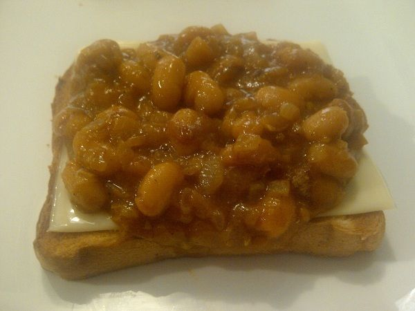

Ultimate Beans on Toast

Bloody beans on toast what more can I say?
B.. E.. A.. N.. S.. Say it with me
Ingredients
- Finest quality tinned beans you can find
- Salted Butter
- Thick white bread
- Worcestershire sauce
- Cheddar Cheese the Cheddar Man would be proud of
Let's Get Cooking
-
First off get those beans broiling in a pan for a good while, it's at this point I would go and add a knob of butter, handful of cheese and a dash of Worcestershire sauce.
-
Once you start to see the beans sticking to the bottom of the pan give them another minute or two and then turn the heat off.
-
Get your lovely thick white bread sizzling in the toaster while you let the beans unstick themselves.
-
Dash the bread with butter, smother it with the beans, big handful of cheese and a crack of salt and Voila!